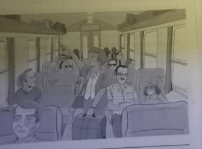
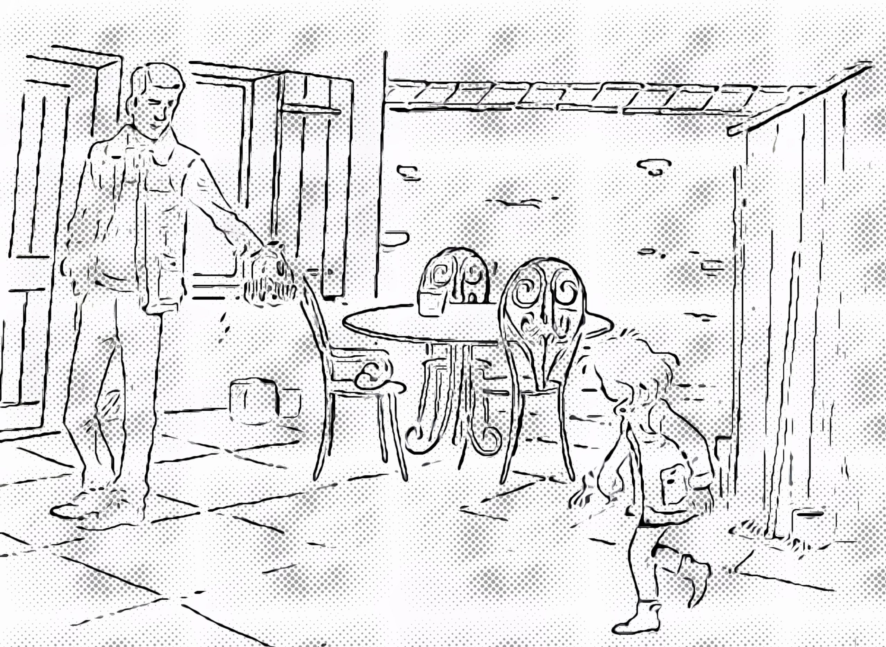
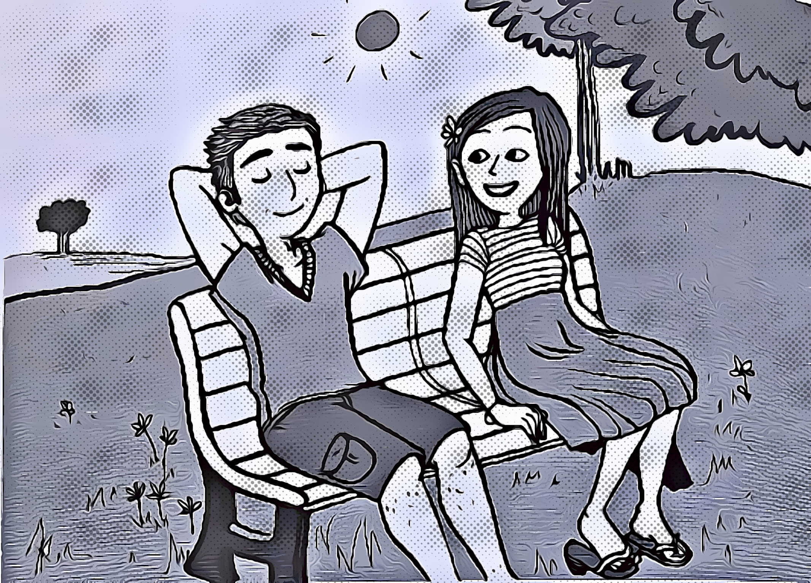

Série 26
Compréhension orale — image/audio, choix, et correction.
Q1
A1
3 pt
Correction: B — B
Écoutez les 4 propositions. Choisissez celle quicorrespond à l'image.

A.
B. Bonne réponse
C.
D.
Q2
A1
3 pt
Correction: D — D
Écoutez les 4 propositions. Choisissez celle quicorrespond à l'image.

A.
B.
C.
D. Bonne réponse
Q3
A1
3 pt
Correction: C — C
Écoutez les 4 propositions. Choisissez celle quicorrespond à l'image.

A.
B.
C. Bonne réponse
D.
Q4
A1
3 pt
Correction: A — A
Écoutez les 4 propositions. Choisissez celle quicorrespond à l'image.
A. Bonne réponse
B.
C.
D.
Q5
A2
9 pt
Correction: C — C
Écoutez l'extrait sonore et les 4 propositions Choisissez la bonne réponse.

A.
B.
C. Bonne réponse
D.
Q6
A2
9 pt
Correction: C — C
Écoutez l'extrait sonore et les 4 propositions Choisissez la bonne réponse.
A.
B.
C. Bonne réponse
D.
Q7
A2
9 pt
Correction: C — C
Écoutez l'extrait sonore et les 4 propositions Choisissez la bonne réponse.
A.
B.
C. Bonne réponse
D.
Q8
A2
9 pt
Correction: B — B
Écoutez l'extrait sonore et les 4 propositions Choisissez la bonne réponse.
A.
B. Bonne réponse
C.
D.
Q9
A2
9 pt
Correction: C — Obtenir un rendez-vous.
Écoutez le document sonore et la question. Choisissez la bonne réponse.
A. Acheter un nouveau véhicule.
B. Connaître les horaires.
C. Obtenir un rendez-vous.Bonne réponse
D. Se plaindre d'une réparation.
Q10
A2
9 pt
Correction: B — D'un souci de transport.
Écoutez le document sonore et la question. Choisissez la bonne réponse.
A. D'un nouveau film à voir.
B. D'un souci de transport.Bonne réponse
C. D'une recherche d'emploi.
D. D'une séance de sport.
Q11
B1
15 pt
Correction: D — Voir une exposition.
Écoutez le document sonore et la question. Choisissez la bonne réponse.
A. Dîner au restaurant.
B. Faire des courses.
C. Travailler tard.
D. Voir une exposition.Bonne réponse
Q12
B1
15 pt
Correction: C — Les cours ont lieu en journée.
Écoutez le document sonore et la question. Choisissez la bonne réponse.
A. Le test de niveau est difficile.
B. L'école est loin de son bureau.
C. Les cours ont lieu en journée.Bonne réponse
D. Les tarifs sont chers pour lui.
Q13
B1
15 pt
Correction: B — Leur collègue.
Écoutez le document sonore et la question. Choisissez la bonne réponse.
A. Leur client.
B. Leur collègue.Bonne réponse
C. Leur directeur.
D. Leur professeur.
Q14
B1
15 pt
Correction: D — Un vêtement de plage.
Écoutez le document sonore et la question. Choisissez la bonne réponse.
A. Un chapeau de soleil.
B. Un maillot de foot.
C. Un sac de sport.
D. Un vêtement de plage.Bonne réponse
Q15
B1
15 pt
Correction: D — L'utilisation des medias.
Écoutez le document sonore et la question. Choisissez la bonne réponse.
A. L'intérêt pour le cinéma.
B. Les activités de loisirs.
C. Les habitudes de transport.
D. L'utilisation des medias.Bonne réponse
Q16
B1
15 pt
Correction: A — Obtenir une aide financière.
Écoutez le document sonore et la question. Choisissez la bonne réponse.
A. Obtenir une aide financière.Bonne réponse
B. Récupérer un dossier.
C. Remettre un devoir.
D. S'inscrire à l'université.
Q17
B1
15 pt
Correction: C — Pour savoir quand il aura son carnet de chèques.
Écoutez le document sonore et la question. Choisissez la bonne réponse.
A. Pour retirer le chéquier arrivé une semaine avant.
B. Pour vérifier le renouvellement de son chéquier.
C. Pour savoir quand il aura son carnet de chèques.Bonne réponse
D. Pour corriger l'orthographe de son nom sur son chéquier.
Q18
B1
15 pt
Correction: C — De jouer au basket-ball sans payer.
Écoutez le document sonore et la question. Choisissez la bonne réponse.
A. D'assister à une rencontre sportive.
B. De fêter leur victoire entre copains.
C. De jouer au basket-ball sans payer.Bonne réponse
D. De s'inscrire dans un nouveau club.
Q19
B1
15 pt
Correction: A — L'inadéquation entre l'université et le monde du travail.
Écoutez le document sonore et la question. Choisissez la bonne réponse.
A. L'inadéquation entre l'université et le monde du travail.Bonne réponse
B. La baisse de qualité des formations professionnelles.
C. La compétition pour entrer dans les grandes écoles.
D. Le coût de l'inscription dans l'enseignement supérieur.
Q20
B2
21 pt
Correction: C — De réviser les méthodes pédagogiques actuelles.
Écoutez le document sonore et la question. Choisissez la bonne réponse.
A. De créer des groupes de recherche scientifique.
B. De reculer l'âge de début de leur apprentissage.
C. De réviser les méthodes pédagogiques actuelles.Bonne réponse
D. De sélectionner les meilleurs élèves des écoles.
Q21
B2
21 pt
Correction: D — Elle voyage souvent.
Écoutez le document sonore et la question. Choisissez la bonne réponse.
A. Elle est en congé.
B. Elle est tombée malade.
C. Elle travaille la nuit.
D. Elle voyage souvent.Bonne réponse
Q22
B2
21 pt
Correction: A — D'attribuer à la lecture le statut de loisir.
Écoutez le document sonore et la question. Choisissez la bonne réponse.
A. D'attribuer à la lecture le statut de loisir.Bonne réponse
B. De favoriser la lecture en autonomie.
C. De limiter la lecture d'histoires illustrées.
D. De sélectionner des lectures classiques.
Q23
B2
21 pt
Correction: B — Comment recycler son sapin.
Écoutez le document sonore et la question. Choisissez la bonne réponse.
A. Comment protéger ses végétaux.
B. Comment recycler son sapin.Bonne réponse
C. Comment replanter un arbre.
D. Comment scier une branche.
Q24
B2
21 pt
Correction: C — Elle leur permet de se loger en toute sécurité.
Écoutez le document sonore et la question. Choisissez la bonne réponse.
A. Elle fournit une carte de lieux dangereux à éviter.
B. Elle leur enseigne des techniques d'autodéfense.
C. Elle leur permet de se loger en toute sécurité.Bonne réponse
D. Elle propose une liste de numéros d'urgence.
Q25
B2
21 pt
Correction: A — Amener l'élève à participer à sa propre formation.
Écoutez le document sonore et la question. Choisissez la bonne réponse.
A. Amener l'élève à participer à sa propre formation.Bonne réponse
B. Axer principalement l'apprentissage sur le jeu.
C. Initier les élèves à des activités parascolaires.
D. Responsabiliser les élèves encore immatures.
Q26
B2
21 pt
Correction: D — Elle est respectée pour son professionnalisme.
Écoutez le document sonore et la question. Choisissez la bonne réponse.
A. Elle a décidé d'adopter une attitude agressive.
B. Elle a eu des problèmes pour se faire une place
C. Elle est harcelée par des plaisanteries sexistes
D. Elle est respectée pour son professionnalisme.Bonne réponse
Q27
B2
21 pt
Correction: A — Ils apprennent à communiquer.
Écoutez le document sonore et la question. Choisissez la bonne réponse.
A. Ils apprennent à communiquer.Bonne réponse
B. Ils developpent leur créativité.
C. Ils s'ouvrent à d'autres cultures.
D. Ils sont dynamiques en cours.
Q28
B2
21 pt
Correction: B — Faciliter la consommation de produits sains.
Écoutez le document sonore et la question. Choisissez la bonne réponse.
A. Conseiller gratuitement des régimes minceur.
B. Faciliter la consommation de produits sains.Bonne réponse
C. Livrer des spécialités régionales à domicile.
D. Proposer une émission de cuisine sur Internet.
Q29
B2
21 pt
Correction: D — D'une sensibilisation aux injustices.
Écoutez le document sonore et la question. Choisissez la bonne réponse.
A. D'un ancien événement protestataire.
B. D'un nouveau code vestimentaire.
C. D'une fête scolaire traditionnelle.
D. D'une sensibilisation aux injustices.Bonne réponse
Q30
C1
26 pt
Correction: C — Du bon vouloir du client.
Écoutez le document sonore et la question. Choisissez la bonne réponse.
A. De la législation en vigueur.
B. De la paye des employés.
C. Du bon vouloir du client.Bonne réponse
D. Du type d'établissement.
Q31
C1
26 pt
Correction: B — Elle confirme une théorie ancienne.
Écoutez le document sonore et la question. Choisissez la bonne réponse.
A. Elle annonce de futures découvertes
B. Elle confirme une théorie ancienne.Bonne réponse
C. Elle illustre les progrès du matériel scientifique.
D. Elle permet la poursuite des travaux d'Einstein.
Q32
C1
26 pt
Correction: B — Il enrichit les relations humaines.
Écoutez le document sonore et la question. Choisissez la bonne réponse.
A. Il développe la volonté de vaincre
B. Il enrichit les relations humaines.Bonne réponse
C. Il garantit l'équilibre psychologique.
D. Il procure des bienfaits physiques.
Q33
C1
26 pt
Correction: D — En s'engageant comme citoyenne.
Écoutez le document sonore et la question. Choisissez la bonne réponse.
A. En communiquant dans les médias.
B. En critiquant le pouvoir en place.
C. En représentant ses électeurs.
D. En s'engageant comme citoyenne.Bonne réponse
Q34
C1
26 pt
Correction: D — L'intérêt de partager des services.
Écoutez le document sonore et la question. Choisissez la bonne réponse.
A. Le coût de l'entretien d'une voiture.
B. Les tendances en matière de loisirs.
C. L'évolution des tarifs des transports.
D. L'intérêt de partager des services.Bonne réponse
Q35
C1
26 pt
Correction: A — Les contrôles systématiques imposés aux banques
Écoutez le document sonore et la question. Choisissez la bonne réponse.
A. Les contrôles systématiques imposés aux banquesBonne réponse
B. Les interventions nécessaires des États dans l'économie
C. Les règles strictes régulant les marche (...)
D. Les taxes importantes appliquées aux entreprises
Q36
C2
33 pt
Correction: A — C'est un thème controversé.
Écoutez le document sonore et la question. Choisissez la bonne réponse.
A. C'est un thème controversé.Bonne réponse
B. C'est une croyance invraisemblable,
C. C'est une hypothèse vérifiée.
D. C'est une invention de science-fiction.
Q37
C2
33 pt
Correction: B — Il considère que la médecine a du mal à tout expliquer.
Écoutez le document sonore et la question. Choisissez la bonne réponse.
A. Il admet que les guérisons spontanées sont fréquentes.
B. Il considère que la médecine a du mal à tout expliquer.Bonne réponse
C. Il déconseille l'utilisation de certains médicaments.
D. Il est convaincu de l'efficacité des remèdes naturels.
Q38
C2
33 pt
Correction: A — Le consensus à ce sujet semble impossible.
Écoutez le document sonore et la question. Choisissez la bonne réponse.
A. Le consensus à ce sujet semble impossible.Bonne réponse
B. Le nombre de données complexifie l'analyse.
C. Les études existantes doivent être révisées.
D. Les thèses avancées varient selon les pays.
Q39
C2
33 pt
Correction: D — Les réhabilitations ont une portée limitée
Écoutez le document sonore et la question. Choisissez la bonne réponse.
A. Les bâtiments restaurés sont en nombre insuffisan
B. Les cités réaménagées sont surtout résidentielles
C. Les municipalités privilégient les projets coûteux
D. Les réhabilitations ont une portée limitéeBonne réponse